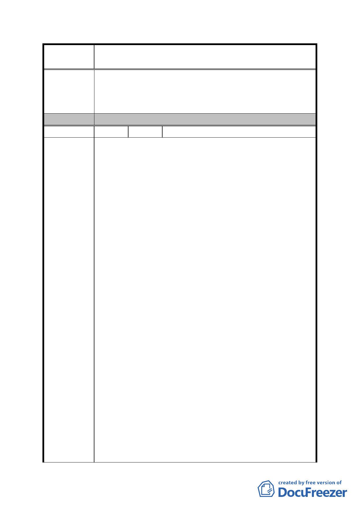

案
名
修訂臺北市「基隆河（中山橋至成美橋段）附近地區土地使
用分區與都市設計管制要點」（北段地區）計畫案
北好好看」之容積獎勵項目(廣場式開放空間、地面人行
通道、立體人行通道、挑空室內開放空間等，且就容積獎
勵項目規範都市設計準則)；且明定參與「臺北好好看」
個案得依「臺北好好看」容積獎勵機制規定增加容積。
委 員 會 決 議 同編號 1。
編 號 29 陳情人 健豪建設股份有限公司（A2）
一、土地及建築物之使用議題 :
大內科工業區已開放作商業商務辦公使用，且租金低廉，
造成大彎北段地區之競爭力下降，商業辦公機能降低，若
仍須維持大量商業使用面積，商業區 (供商業購物中心使
用及一般商業使用)及娛樂區(供娛樂購物中心使用及娛
樂健身使用)之土地及建築物使用，其建築物低層部作附
表一指定使用項目之容積樓地板面積應達申請基地最小
法定建蔽率之建築面積乘以 3 倍，最小建蔽率為 40%，本
案商業法定容積率為 120%，將設置超過三層樓之商業，對
於本案對市場評估結果，商業市場將會供過於求，無法有
效發展起來。
陳情理由
二、建築物立面寬度議題 :
原先細部計畫並無此項規定，於這次簡報內容「議題四：
建議修正建築物高度規定」之建議修正方案提出：街廓編
號 A1、 A2、 B1、 B2 建築基地面向基隆河及山景側之建
築物立面，高於地面 40 公尺以上之建築物立面寬度不得
大於土地細分規模東西向境界線長度之三分之一。若按上
述規定，將會嚴重影響建築配置，對於城市所要塑造多元
的建築外型與建築設計將會有很大之出入；另建築設計將
有大幅修改並重新設計，將影響各案參與「促進都市再生
2010 年臺北好好看」之時程，並造成本案更大的人力與物
力成本。市府應本著勿勞民傷財的理念，調整此項規定。
三、建築容積議題 :
臺北好好看政策為鼓勵大量開放空間，提升都市生活品
質，分別訂有相關獎勵措施。因此臺北好好看之審理辦法
應秉持公平性與一致性，容積獎勵之標準應與其他地區之
臺北好好看案件一致，而細部計畫通盤檢討提出臺北好好
- 85 -